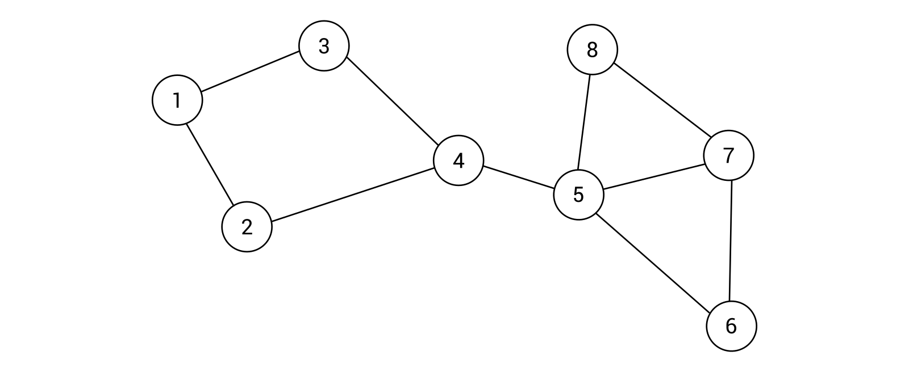

This tutorial will walk you through features of this web app
2/8
What are path finding algorithms?
Simply put, given a start and end location, a path finding algorithm can use a
sequence of
instructions to find a path from the start to the end based on some predefined criteria. Many of the concepts used
in these
algorithms are based from a branch of mathematics called graph theory.
The bridge traversal problem is an age-old graph theory question. Can you find a
path that traverses all seven bridges, given that you can travel across each bridge only once? (And can't
walk through water).
Find the answer here.
3/8
Types of path finding algorithms
Different algorithms are employed based on the complexity of the path finding
problem. For example, Google Maps employs a modified version of Dijkstra's or A* algorithm which
take into account path costs. As in the figure shown below, going through certain paths have a greater cost, and
the goal of the algorithm is to get to the desired destination with minimal cost. When there are no path costs or
weights, simpler algorithms such as DFS or BFS are used.
The above image shows a weighted graph, Dijkstra's and A* are used for finding
shortest path

The above image shows an unweighted graph, BFS or DFS are used for finding shortest
path